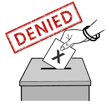

Eligible voter
Voting is a right of every Rwandan who fulfils the requirements determined by the Law relating to
elections and Instructions of the National Electoral Commission.
Every Rwandan registered within the Country or in a Rwandan diplomatic mission is eligible to vote
when he/she fulfils the following conditions:
- Having attained at least eighteen (18) years of age or will have attained it on the polling day;
- Having registered on the voters' register;
- Not having been deprived of his or her civil and political rights by competent courts of law;
- Not subjected to disenfranchisement specified in Article three (3) of these Instructions.
Persons prohibited from registering on the voters register
Persons prohibited from registering on the voters register are:
a person who is deprived of his/her right to vote by competent courts of law and has not been
rehabilitated or has not been granted amnesty in accordance with the law;

a person definitively sentenced for homicide or manslaughter;
a person definitively convicted of the crime of genocide or crimes against humanity as stipulated
in Article 11
of the Law No27/2010 of 19/6/2010 relating to elections as modified and
complemented to date;
a person who confessed and pleaded guilty to the crime of genocide against the Tutsi and crimes
against humanity as set out in Article 11 of the Law No 27/2010 of 19/6/2010 relating to elections
as modified and complemented to date;
a person who was convicted of the crime of defilement
a person who was convicted of the crime of rape;
a prisoner;
a refugee.
Persons not eligible to become election volunteers
Persons who have not yet attained 18 years of age subjected to disenfranchement provided for
by laws, and the following categories of persons are not allowed to take part in electoral
operations as volunteers:
- Ministers;
- Members of Parliament
- Governors of Provinces and Executive Committee members of the Districts and the City of
Kigali.
- Executive Secretaries of Cells,Sectors,Districts, Provinces and the City of Kigali;
- Executive Committee members of villages;
- Judges and Prosecutors;
- Security agents (Soldiers, Police officers , NISS, RIB, DASSO);
- Election observers;
- Leaders and Representatives of Political organizations at different levels.